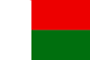

|
Länderinformationen Madagaskar
1. Das Wichtigste auf einen Blick2. Sehens- und Hörenswertes
3. Politik & Gesellschaft
4. Schmeckenswertes
5. Medien
6. Reisetipps
1. Wissenswertes
|  | Hier
haben wir die wichtigsten Zahlen und Fakten zu Madagaskar
und der madagassischen Sprache zusammengetragen. |
Wir freuen uns, dass Sie sich für den Madagassischkurs von Sprachenlernen24 entschieden haben. Um Ihnen Ihre Reisevorbereitungen zu erleichtern und Ihnen einen kleinen Vorgeschmack dessen zu geben, was Sie auf Madagaskar erwarten wird, haben wir hier Wissenswertes, Wichtiges, Kurioses, Interessantes, Kulinarisches und noch viele Informationen mehr rund um den Inselstaat, seine Bewohner und deren Sprache für Sie zusammengetragen.
 Die
Madagassische Sprache
Die
Madagassische Sprache
Wir beginnen zunächst mit der Sprache bzw. den Sprachen, die auf Madagaskar gesprochen werden. Es gibt zwei offizielle Amtssprachen, zum einen natürlich Madagassisch, zum anderen als zweite Amtssprache Französisch. Die Existenz der Letzteren lässt sich durch die langjährige Kolonialherrschaft Frankreichs über Madagaskar vom Ende des 19. Jahrhunderts bis ins Jahr 1960 erklären. Wichtiger für uns ist jetzt selbstverständlich Madagassisch, oder wie es im Madagassischen heißt Malagasy (malgasch gesprochen; im Deutschen sagt man auch manchmal Malagassisch, Madegassisch oder Malgasch). Daneben findet man auch mehrere einheimische Dialekte auf der Insel, die auch heutzutage noch gesprochen werden.
 Madagassisch
– eine austronesische Sprache
Madagassisch
– eine austronesische Sprache
Die madagassische Sprache gehört zur großen Sprachfamilie der austronesischen Sprachen und ist die Westlichste Sprache dieser Familie. Letztere erstreckt sich über ein riesiges Gebiet, dass von Madagaskar bis zur Osterinsel und von Taiwan und Hawaii bis nach Neuseeland reicht. Die genaue Anzahl an Sprachen und Sprechern dieser Sprachfamilie ist unter Linguisten umstritten, unter anderem aus dem Grund, dass man oft nicht wirklich zwischen Sprache und Dialekt unterscheiden kann. Die Größe ihres Verbreitungsgebietes und auch die Zahl ihrer Sprecher macht die austronesische „Superfamilie“ zu einer der Wichtigsten weltweit; In dieser Hinsicht wird sie nur durch die indoeuropäische Sprachfamilie übertroffen.
Aufgrund der zahlreichen strukturellen Unterschiede wird angenommen, dass die austronesische Sprachfamilie eine Entwicklungsgeschichte von über 4000 Jahren hinter sich hat. Sie wird meist in zwei Untergruppen unterteilt, die west- und die ostaustronesischen Gruppe. Madagaskar zählt zur westaustronesischen Gruppe, zu welcher außerdem noch ganz Indonesien, die malaiische Halbinsel, die Philippinen, Taiwan, Teile Vietnams, Kambodscha, Westneuguinea und noch zwei mikronesische Sprachen (Palauisch und Chamorro) gehören.
Die westaustronesische Sprachgruppe verbreitete sich vermutlich von Taiwan ausgehend. Dort war eine austronesische Population angesiedelt, die gen pazifischen und vorderasiatischen Raum hin wanderte. Ungefähr 3000 v. Chr. gelangten die Austronesier auf die Philippinen, 2500 v. Chr. nach Timor. Um 1000 v. Chr. dehnten sie dann ihren Siedlungsraum immer weiter nach Westen aus. Im ersten Jahrtausend n. Chr. schließlich gelangten sie wahrscheinlich über Borneo und Sumatra entlang der indischen und afrikanischen Küste bis zum heutigen Madagaskar. Da sprachliche Unterschiede des Madagassischen zu anderen austronesischen Sprachen existieren, wird vermutet, dass die sprachliche Abtrennung in diesem Zeitraum stattgefunden haben muss.
 Die
Entstehung des Madagassischen
Die
Entstehung des Madagassischen
Trotz der vielfältigen Einflüsse auf die Bevölkerung Madagaskars deutet die einheitliche Sprache Malagasy auf eine sehr frühe Vermischung unter den Einwanderern hin, sie entwickelte sich vermutlich bereits im 11. Jahrhundert n. Chr. aus verschiedenen malaiischen Dialekten. Dennoch existieren daneben eine Vielzahl von einheimischen Dialekten, die auch heute noch im Alltag gesprochen werden; Sie spiegeln die unterschiedlichen Volksgruppen wieder, die auf Madagaskar leben. Die Verbreitung des Madagassischen ist nicht sehr groß, es wird ausschließlich auf Madagaskar und ein paar wenigen Nebeninseln gesprochen.
Malagasy gehört der Barito-Gruppe an, einer Gruppe von Sprachen, die im indonesischen Teil Borneos gesprochen werden, zu denen z.B. auch Dusun Deyah oder Ma’anyan zählen. Letztere ist laut Linguisten auch diejenige, die dem heutigen Madagassisch am ähnlichsten ist; sie wird im Südosten Borneos gesprochen. Im Laufe der Zeit wurde das Madagassische durch viele verschiedene Einflüsse bereichert und integrierte Wörter aus afrikanischen Bantu-Sprachen, aus dem Persischen, Altindischen und Arabischen. Spuren der arabischen Kultur sind z.B. die Monatsnamen und die Wochentage wie auch der Mondkalender und die Astrologie. Nichtsdestotrotz blieben arabische und andere afrikanische Einflüsse auf das Madagassische eher gering.
Sprache wurde auf Madagaskar zunächst nur oral kommuniziert, eine Schriftkultur besaßen die madagassischen Ureinwohner nicht. Erst als sich im 11. Jahrhundert n. Chr. Einwanderer aus Arabien an der Ostküste der Insel niederließen (von ihnen stammt die heutige Volksgruppe der Antaimoro ab), entwickelten diese aus dem Arabischen eine eigene Schrift, Sorabe genannt. Gleichzeitig jedoch adaptierten sie das Malagasy der Ureinwohner als Sprache. Die entstandene neue Schrift wurde zwar später auch von den Königen Madagaskars verwendet, fand insgesamt aber nur wenig Gebrauch. Zu Beginn des 19. Jahrhunderts schließlich wurde die lateinische Schrift, die auch heute noch in Madagaskar gebräuchlich ist, von englischen Missionaren auf die Insel gebracht und löste Sorabe als Schrift ab.
Nicht nur bezüglich der Schrift hat die Ankunft der Europäer im 18. Jahrhundert die madagassische Sprache stark beeinflusst, auch wurden viele Ausdrücke integriert oder „eingemadagassischt“. So wurden einige Wörter des heute gebräuchlichen Wortschatzes vom Englischen (z.B. latabatra von table oder penina von pen) oder vom Französischen (savony von savon) abgeleitet. Auch verwenden die Madagassen heutzutage häufig französische Vokabeln, wenn es kein madagassisches Äquivalent für einen bestimmten Ausdruck gibt oder dieses relativ lang ist. Aus diesem Grund hört man im Umgangssprachlichen oft eine Mischung beider Sprachen. Ein Beispiel hierfür ist milalao ordinateur (am Computer spielen) oder misotro jus anstelle von misotro ranom-boankazo (Obstsaft trinken). Wenn Sie Französisch sprechen, werden Sie also einige Ausdrücke in der Umgangssprache kennen bzw. Ähnlichkeiten erkennen.
Allgemein werden Madagassisch- (vor allem auf dem Land) und Französischkenntnisse auf Ihrer Reise von großem Vorteil sein. Denn nur wenige Madagassen sprechen Englisch, und wenn, dann sind es meist jüngere, gut ausgebildete Leute in den größeren Städten. Kenntnisse der deutschen Sprache sind noch seltener.
A,
B, D...: Madagassisches Alphabet und
Aussprache
Aussprache
Im Zuge der ersten Bibelübersetzung wurde das lateinische Alphabet von europäischen Missionaren in der ersten Hälfte des neunzehnten Jahrhunderts auf Madagaskar eingeführt. Im Gegensatz zum Deutschen verfügt es jedoch nur über 21 Buchstaben. Diese sind a [a], b [bi], d [di], e [e], f [ef], g [ge], h [aints], y [igra'ka], i [i], j [dzi], k [ka], l [ela], m [ema], n [enA], o [u], p [pe], r [erA], s [esU], t [te], v [ve], z [zedrA]. C, q u, w und x existieren im Madagassischen nicht.
 Madagassische
Zahlen
Madagassische
Zahlen
Neben dem madagassischen Alphabet haben wir hier für Sie die madagassischen Zahlen aufgeführt, damit Sie schon einmal für Ihren Urlaub üben können. Zählen heißt auf madagassisch übrigens manìsa.
|
Null |
Àotra |
|
Eins |
Irày |
|
Zwei |
Ròa |
|
Drei |
Tèlo |
|
Vier |
Èfatra |
|
Fünf |
Dìmy |
|
Sechs |
Ènina |
|
Sieben |
Fìto |
|
Acht |
Vàlo |
|
Neun |
Sìvy |
|
Zehn |
Fòlo |
|
Elf |
Iraika
ambin'ny folo |
|
Zwanzig |
Roapòlo |
|
Dreißig |
Telopòlo |
|
Hundert |
Zàto |
|
Tausend |
Arìvo |
|
Million |
tapitrisa |
Wir möchten Ihnen in diesem Reiseführer natürlich nicht nur Fakten zur Madagassischen Sprache aufzählen, sondern Ihnen auch gerne einen Einblick in das Land und seine Leute bieten, um Sie auf Ihren Urlaub dort ein wenig einzustimmen. Deshalb folgt im nächsten Teil eine Einführung in die madagassische Geschichte und wichtige Fakten zur Insel.
 Wir
fuhren nach Madagaskar, und hatten die
Wir
fuhren nach Madagaskar, und hatten die
Pest an Bord.... - Nur eine
Episode der
bewegten Geschichte der Insel
Pest an Bord.... - Nur eine Episode der
bewegten Geschichte der Insel
Die Besiedlung der ursprünglich von Menschen unbewohnten Insel könnte bereits vor ungefähr 3000 Jahren begonnen haben. In dieser Zeit hatten zumindest mehrere Kulturvölker rund um den Indischen Ozean (Griechen, Inder, Ägypter, Phönizier) per Schifffahrt zumindest theoretisch die Option, Reisen nach Madagaskar zu unternehmen, um dort nach den bereits damals hoch geschätzten Gewürzen wie Nelken oder Zimt zu suchen. Alten Überlieferungen zufolge hatte außerdem bereits der biblische König Salomon (sein madagassischer Name ist Rasoleiman) auf Madagaskar nach Gold suchen lassen. Für solche Überlieferungen existieren jedoch keine archäologischen Funde oder Beweise.
Es gibt mehrere Theorien zur Chronologie der Besiedlung Madagaskars bzw. zu den Wegen, auf welchen die ersten Siedler auf die Insel kamen. Die erste große, vom südostasiatischen Raum ausgehende Einwanderungswelle, die auch belegt ist, muss aber auf Fälle zwischen dem dritten und dem siebten Jahrhundert nach Christus stattgefunden haben, darüber ist man sich in der Forschung einig.
Dieser Prozess geschah im Zuge der austronesischen Expansion über mehrere Jahrhunderte hinweg, und zwar etappenweise über Indien und Afrika. Auch heute noch kann man die große Nähe zu Südostasien an mehreren kulturellen Elementen festmachen, z.B. anhand der - an vielen Orten Indonesiens ähnlichen - landwirtschaftlichen Praktiken im Zentralhochland und in östlichen Teilen des Landes (z.B. der Reis-Terrassenanbau), oder den an der Ostküste verbreiteten Strohhütten, welche sehr an die Architekturtradition Javas erinnern. Auch sprachlich lassen sich die südostasiatischen Einflüsse feststellen, wie Sie bereits im Abschnitt zur Entstehung des Madagassischen nachlesen konnten. Gut ein Drittel aller madagassischen Wörter – so schätzen Sprachwissenschaftler – kommen nämlich direkt aus dem Malayo-Indonesischen.
In den darauf folgenden Jahrhunderten kamen weitere Einflüsse hinzu: durch die zum Teil freiwilligen, zum Teil aber auch durch den Sklavenhandel verursachten Einwanderungswellen der afrikanischen Bantu und durch Besiedlungen der Swahili und Araber in Teilen des Südwestens und Nordens Madagaskars. Diese Bewegungen vollzogen sich in der ersten Hälfte des zweiten Jahrtausends. Zu Beginn des 16. Jahrhunderts wurde Madagaskar von den Portugiesen entdeckt; sie konnten auf der Insel aber nie richtig Fuß fassen. Am Ende des 17. Jahrhunderts dann, etwa 1690, wurde auf der Insel Sainte Marie vor Ostküste Madagaskars eine Piratenfestung gegründet, was wohl die abenteuerlichste Episode in der Geschichte der Insel darstellt. In diesem Zeitraum war Madagaskar Ausgangspunkt für Raubzüge im Bereich des Indischen Ozeans, des Roten Meers und bis hinauf zu den Küsten Asiens. Auf Sainte Marie kann man heute noch einen Piratenfriedhof besichtigen. Mit dem Ende der großen Piratenzeiten, etwa um 1720, schloss sich aber auch dieses Kapitel.
Während des zweiten Jahrtausends n. Chr. entstanden auf der Insel zahlreiche Königreiche, eines davon das Königreich der Merina. Dieses trieb unter dem König Andrianampoinimerina gegen Ende des 17. Jahrhunderts den Einigungsprozess Madagaskars voran, was durch dessen Nachfolger weiter forciert wurde und gegen Ende des 19. Jahrhunderts nahezu abgeschlossen war.
Erst mit der Ankunft skandinavischer und britischer Missionare während des 19. Jahrhunderts wurden europäische Einflüsse deutlich. Im Zuge dessen kam es auch zur Evangelisierung des Landes. So sind heute die wichtigsten christlichen Glaubensrichtungen auf der Insel vertreten, nämlich die evangelische, die katholische, die anglikanische und die lutherische Kirche. Ab dieser Zeit lieferten sich Briten und Franzosen einen Wettlauf um die Insel, welchen bekanntermaßen die Franzosen gewannen. Im Jahre 1896 schließlich wurde Madagaskar französische Kolonie und die einheimische Monarchie wurde abgeschafft. Unter der französischen Kolonialherrschaft, die bis zum Jahr 1960 andauerte, wurde die madagassische Verwaltung nach französischem Vorbild eingerichtet. Im Jahre 1920 entwickelten sich erste nationale Widerstandsbewegungen zu Aufruhren, welche jedoch von den Kolonialherren schnell wieder unterdrückt wurden.
Knapp 30 Jahre später, 1947, kam es zu einem zweiten und schlimmeren Höhepunkt der Unruhen. Dieser forderte als einer der ersten Widerstandsbewegungen im französischen Kolonialreich zehntausende Todesopfer, größtenteils unter der madagassischen Bevölkerung. Es kam soweit, dass 1958 die „Republik Madagaskar“ innerhalb der französischen Gesellschaft ausgerufen wurde, so dass schließlich am 26. Juni 1960 die Unabhängigkeit der Insel von Frankreich proklamiert wurde. Noch im selben Jahr trat die neu gegründete Republik Madagaskar der UNO bei. Was seitdem politisch geschehen ist, können Sie unter dem Abschnitt Politik nachlesen.
 Einwohner
Einwohner
Die Gesamtbevölkerung Madagaskars beträgt rund 19,4 Millionen Menschen, was eine Bevölkerungsdichte von um die 30 Einwohner pro km² ausmacht (mit einer Zuwachsrate von rund 3%). Zum Vergleich: in Deutschland beträgt die Bevölkerungsdichte rund 231 Einwohner pro km². Madagaskar ist also nur sehr dünn besiedelt. Mehr als 60% der madagassischen Bevölkerung ist jünger als 20 Jahre, eine Quote, von der Deutschland nur träumen kann; Von einer Überalterung der Gesellschaft kann hier also keine Rede sein. Damit liegt das Durchschnittsalter bei unglaublich jungen 17,5 Jahren! Die Lebenserwartung liegt allerdings bisher bei nur 57 Jahren, ein deutlicher Gegensatz zu Deutschland, wo die durchschnittliche Lebenserwartung bei über 80 Jahren liegt. Auf Madagaskar gibt es 18 große ethnische Gruppierungen oder Volksstämme (foko) aus den verschiedenen Einwanderungswellen der letzten rund 1500 Jahre. All diese Stämme besitzen einen eigenen kulturellen und sprachlichen Hintergrund, entwickelten aber dennoch eine gemeinsame madagassische Identität und ein nationales Einheitsgefühl, wozu zu einem Großteil die einheitliche Landessprache beitrug. Die drei größten Gruppen sind die Merina (25 %), die Betsimisaraka (15 %) und die Betsileo (12 %). Kleine, aber wirtschaftlich häufig recht einflussreiche ausländische Minderheiten sind vor allem Franzosen, Chinesen, Mauritier, Komoren und Indopakistaner. Allgemein ist die madagassische Bevölkerung sehr traditionsbewusst; gleichzeitig aber wurden viele ausländische kulturelle Einflüsse immer wieder, vor allem in den Städten, in die eigenen Sitten und Bräuche integriert. Vielleicht ist diese Vielzahl an friedlich miteinander lebenden Ethnien ein Grund dafür, dass Madagassen allgemein ihrem Ruf als sehr freundliche, aufgeschlossene und neugierige Menschen gerecht werden.
 Fläche
Fläche
Die Republik Madagaskar ist mit 587.041 km² und rund 5000 km Küstenlinie nach Grönland, Neu-Guinea und Borneo die viertgrößte Insel der Welt und nach Indonesien der zweitgrößte Inselstaat. In Ost-West-Richtung ist die Insel an ihrer breitesten Stelle 580 km breit, in Nord-Süd-Richtung rund 1600 km lang. Zum Vergleich: Die Gesamtfläche Deutschlands beträgt rund 357.000 qm, Madagaskar ist also mehr als doppelt so groß und hat damit etwa eine Fläche wie Deutschland, Holland, Belgien, Österreich und die Schweiz zusammen! Aufgrund seiner Größe wird Madagaskar auch häufig als „Große Insel“ oder „Kontinenteninsel“ bezeichnet und ist eigentlich fast ein Mini-Kontinent. Als Insel hat Madagaskar natürlich keine direkten Nachbarn; benachbarte bzw. nächstgelegene Inseln sind einige hundert Kilometer entfernt, wie die im Nordwesten gelegenen Komoren (Mayotte und das Moroni-Atoll), die 850 km östlich gelegenen Maskarenen mit Réunion und Mauritius und im Norden, ca. 1000 km entfernt, die Seychellen. Im Westen schließlich befindet sich rund 400km entfernt der afrikanische Kontinent mit Mosambik.
 Währung
Währung
Die Währung Madagaskars ist Malagasy Ariary (MGA). Banknoten gibt es im Wert von 10.000, 5.000, 2.000 und 1.000 Ariary, Münzen theoretisch in den Werten 1, 2, 4, 10, 20, 50 Ariary. Wegen ihres geringen Wertes sind sie jedoch nicht im Umlauf. Neben Mauretanien ist Madagaskar das einzige Land, das bei der Währung vom Dezimalsystem abweicht. Ein Euro entspricht ca. 2.690 Ariary (Stand: Februar 2008). Seit Kurzem ist es auch möglich, übrig gebliebene Ariary in Euro zurück zu tauschen, allerdings zu einem vergleichsweise schlechten Kurs.
 Ökonomische
Situation
Ökonomische
Situation
Die Hauptexportprodukte Madagaskars sind Vanille, Nelken und Gewürze im Allgemeinen, außerdem Baumwolle, Litschis, Kaffee, Kakao, Fischereierzeugnisse (hauptsächlich Garnelen und Thunfisch), Zucker und vor allem Textilien. So stellt die Textilindustrie seit Jahren das bedeutendste Industriesegment dar, dessen Zentrum rund um die Hauptstadt Antananarivo liegt. Größere industrielle Bedeutung hat auch der Abbau von Chromerzen, Graphit und Glimmer erlangt. Die wichtigsten Absatzmärkte sind Frankreich und die USA. In den Sechziger und Siebziger Jahren war Madagaskar noch ein großer Reisexporteur, ist aber heute selbst auf viele Nahrungsmittelimporte angewiesen. Nahrungsmittel sind das wichtigste Importgut, aber auch Erdöl und Konsumgüter werden in großen Mengen eingeführt. Dank dem sekundären und tertiären Wirtschaftssektor erzielte Madagaskar im Jahr 2007 eine Wachstumsrate von 6.3%, und das obwohl immer noch 72% der Erwerbstätigen in der Landwirtschaft tätig sind (der Agrarsektor erwirtschaftete nur 26% des BIPs). Angebaut wird meistens für den Eigenbedarf. Die Hauptanbauprodukte sind Reis, Manioc, Mais, Knollenfrüchte, Bananen, Hülsenfrüchte und Zuckerrohr. Das Land ist reich an Edelsteinen und gilt sogar als Insel mit den meisten Edelstein-Fundstellen der Welt (z.B. Saphire, Rubine, Berylle, Granate, Topase, Chrysoberylle und Tumaline), die stellenweise in solchen Mengen vorkommen, dass man sie nur noch vom Boden auflesen muss.
Zu überwindende Herausforderungen der madagassischen Wirtschaft sind erhebliche Preisschwankungen der eigenen Agrarprodukte auf dem internationalen Markt, welche wiederum nicht selten von Unwettern wie Dürre oder Wirbelstürmen bedroht sind. Auch die weltweite Steigerung der Ölpreise, eine bisher fehlende Diversifizierung der Exportprodukte und Wirtschaftszweige, eine jährliche Inflationsrate von 10% (2007) und die immer noch äußerst schwache Telekommunikations- und Energieversorgungsinfrastruktur sind Probleme des Landes, die es zu überwinden gilt.
Leider ist Madagaskar immer noch ein Entwicklungsland und gilt als eines der ärmsten Länder der Welt. Wie in vielen anderen Entwicklungsländern gibt es auch hier die typische Kluft zwischen einer recht armen Mehrheit und einer sehr wohlhabenden Minderheit; rund 67% aller Madagassen leben unterhalb der absoluten Armutsgrenzen und viele Madagassen sind Analphabeten.
 Zeitzone
Zeitzone
Wenn Sie nach Madagaskar reisen, müssen Sie sich gefühlsmäßig nicht groß umstellen. Die madagassische Ortszeit ist nämlich einfach die mitteleuropäische Zeit plus zwei Stunden. Da in Madagaskar aber nicht von Winter- zu Sommerzeit umgestellt wird, beträgt im Sommer die Zeitdifferenz zur MEZ nur 1 Stunde.